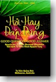

BuddhaSasana
Home Page
This document is written in Vietnamese, with Unicode
Times font
|  |
Tu viện Quảng Ðức, Melbourne, Australia Hỏi Hay, Ðáp
Ðúng
|
Lời người dịch "Hỏi Hay, Ðáp Ðúng" (nguyên tác Anh ngữ: '' Good Question, Good Answer'') là một trong nhiều tác phẩm phổ biến của Ðại đức Shravasti Dhammika, một tu sĩ người Úc đã từng diễn giảng giáo lý Phật Ðà trên đài truyền hình và đại học Úc cũng như nhiều quốc gia khác ở Á châu. Tập sách nhỏ là kết quả của các buổi diễn thuyết ấy và được ấn hành lần đầu tiên vào năm 1987 theo lời thỉnh cầu của đông đảo Phật tử ở Singapore. Ðến nay tập sách đã được tái bản rất nhiều lần ở Úc, Mã Lai, Singapore và Ðài Loan. Riêng tại Singapore, tập sách đã được in ra với hơn ba mươi ngàn bản vào lần ấn hành thứ nhất, là một thành công ngoài dự kiến của tác giả. Tác phẩm đã được đón nhận một cách rộng rãi ở Úc, Mỹ, Canada, Anh, Pháp, Argentina, Singapore và các quần đảo Seychelle, và đến nay đã được dịch nhiều thứ tiếng như Trung Hoa, và Nepal và Miến Ðiện. Nhận thấy tác phẩm có tính cách phổ biến cho người học Phật. Chúng tôi xin chuyển ngữ ra tiếng Việt để giúp cho độc giả Phật tử Việt Nam có thêm những hiểu biết giáo lý Ðạo Phật. Dù hết sức cố gắng nhưng không sao tránh khỏi những sơ sót khi chuyễn ngữ, kính mong các bậc cao minh hoan hỷ chỉ giáo cho. Sài
gòn, đầu xuân 1998 -oOo- |
Chân thành cám ơn Ðại đức Thích Nguyên Tạng đã gửi tặng phiên bản điện tử
(Bình Anson, 11-2000)Xin xem thêm nguyên tác Anh ngữ: Good Question, Good Answer
và bản dịch Việt ngữ: Khéo Vấn, Khéo Đáp
revised: 06-09-2004